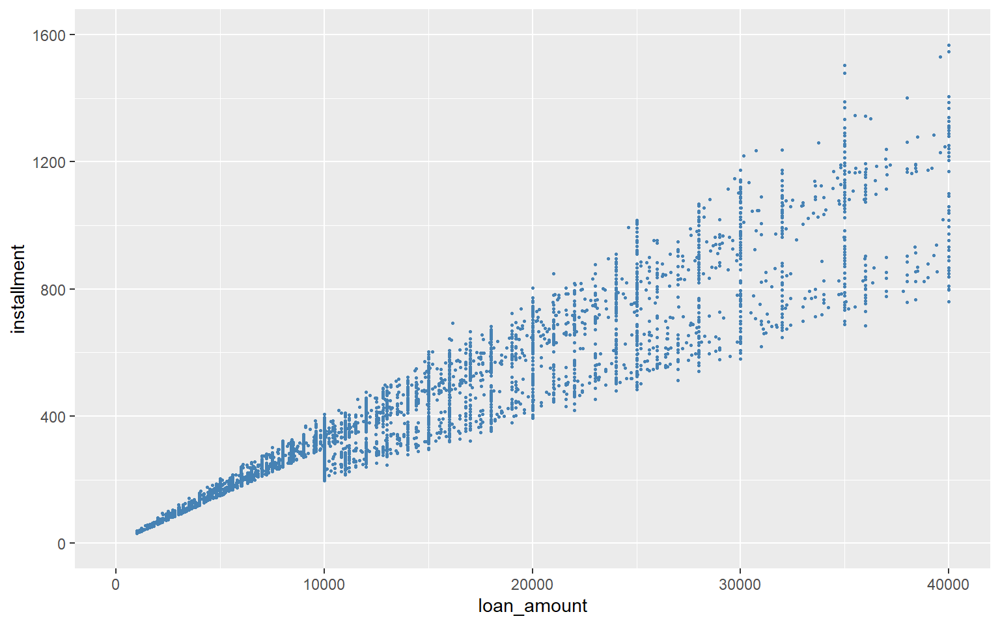
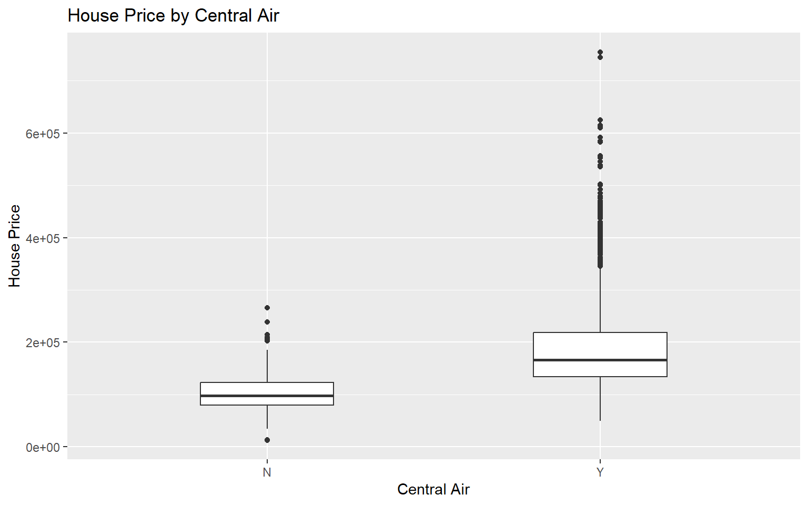

R Programming Challenge 1 Answer
1 Loan Installment Scatter Plot (30 pts)
1.1 Setup
(5 pts) Import the package
tidyverse.(5 pts) Download the dataset
loans_full_schema.csv(right click here) and save it in thedatafolder. Readloans_full_schema.csvand save it asloan.
library(tidyverse)
loan <- read.csv("data/loans_full_schema.csv")1.2 Create a scatter plot
(8 pts) Create a scatter plot of
loan_amountandinstallment. Set the point color tosteelblueand the point size to0.5.(4 pts) Set the x-axis limits from
0to40000, with breaks at0,10000,20000,30000, and40000.(4 pts) Set the y-axis limits from
0to1600, with breaks at0,400,800,1200, and1600.(4 pts) Print the graph.
loan %>%
ggplot(aes(x = loan_amount, y = installment)) +
geom_point(color = "steelblue", size = 0.5) +
scale_x_continuous(
limits = c(0, 40000),
breaks = c(0, 10000, 20000, 30000, 40000)
) +
scale_y_continuous(
limits = c(0, 1600),
breaks = c(0, 400, 800, 1200, 1600)
)2 Ames Housing Box Plot (30 pts)
2.1 Setup
(5 pts) Import the package
tidyverse.(5 pts) Download the dataset
ames.csv(right click here) and save it in thedatafolder. Readames.csvand save it ashousing.
library(tidyverse)
housing <- read.csv("data/ames.csv")2.2 Create a box plot
(8 pts) Create a box plot of
pricebyCentral.Air. Setwidth = 0.4ingeom_boxplot().(8 pts) Add graph title and axis labels:
- Title:
House Price by Central Air - x-axis:
Central Air - y-axis:
House Price
- Title:
(4 pts) Print the graph.
housing %>%
ggplot(aes(x = Central.Air, y = price)) +
geom_boxplot(width = 0.4) +
labs(
x = "Central Air",
y = "House Price",
title = "House Price by Central Air"
)
3 NC Births Contingency Table (30 pts)
3.1 Setup
(5 pts) Import the package
tidyverse.(5 pts) Download the dataset
ncbirths.csv(right click here) and save it in thedatafolder. Readncbirths.csvand save it asbirth.
library(tidyverse)
birth <- read.csv("data/ncbirths.csv")3.2 Create a Contingency Table
(8 pts) Create a contingency table of
habitandlowbirthweight. Usetable()to create a contingency table withhabitas rows andlowbirthweightas columns. Save it asbirth_table.(8 pts) Use
addmargins()to add the sum row and sum column. Save it asbirth_table_withsum.(4 pts) Print
birth_table_withsum.
birth_table <- table(birth$habit,
birth$lowbirthweight)
birth_table_withsum <- addmargins(birth_table)
print(birth_table_withsum)
low not low Sum
nonsmoker 92 781 873
smoker 18 108 126
Sum 110 889 9994 Chou Kaguya-hime! (超時空輝耀姬！) (30 pts)
Kaguya is a new liver in Tsukuyomi. Her roommate, Iroha, also serves as her manager. To improve Kaguya’s streaming performance, Iroha records data from each stream, including:
date: The date of the stream.content: The type of content Kaguya did during the stream.paired_with_iroha: Sometimes Iroha joins Kaguya’s stream. If Iroha appeared in the stream on that date, recordYes; otherwise, recordNo.hours: The duration of the stream (in hours).donation: The total amount of donations Kaguya received.
Tsukuyomi takes 30% of the donations as a commission. Iroha wants to know which type of content has the highest earnings per hour when Kaguya streams alone.
Follow the instructions below to help Iroha find the answer:
(3 pts) Import the package
tidyverse.(3 pts) Download the dataset
kaguya.csv(right click here) and save it in thedatafolder. Readkaguya.csvand save it askaguya_raw.(3 pts) Without modifying
kaguya_raw, create a new dataframe calledkaguya_soloby filtering the data to keep only the streams where Kaguya streamed alone (i.e., not paired with Iroha).(3 pts) Add a new column
earningtokaguya_solo, defined as 70% ofdonation.(3 pts) Add a new column
earning_per_hourtokaguya_solo, calculated asearning / hours.(3 pts) Keep only the columns
date,content,earning_per_hourinkaguya_solo.(3 pts) Arrange the rows of
kaguya_soloin descending order ofearning_per_hour.(4 pts) Print
kaguya_solo. Which date’s stream has the highest earnings per hour?(5 pts) Create a new dataframe
kaguya_solo_sumthat summarizes the averageearning_per_hourfor eachcontentcategory, and arranges it in descending order of averageearning_per_hour. Which type ofcontenthas the highest average earnings per hour?
library(tidyverse)
kaguya_raw <- read.csv("data/kaguya.csv")
kaguya_solo <- kaguya_raw %>%
filter(paired_with_iroha == "No") %>%
mutate(earning = donation * 0.7) %>%
mutate(earning_per_hour = earning / hours) %>%
select(date, content, earning_per_hour) %>%
arrange(desc(earning_per_hour))
print(kaguya_solo[1:5, ])
kaguya_solo_sum <- kaguya_solo %>%
group_by(content) %>%
summarise(avg_earning_per_hour = mean(earning_per_hour)) %>%
arrange(desc(avg_earning_per_hour))
print(kaguya_solo_sum) date content earning_per_hour
1 2050-05-19 Singing 94500.00
2 2050-03-10 Dancing 87640.00
3 2050-03-31 Gaming 75425.00
4 2050-04-14 Gaming 72753.33
5 2050-05-25 Gaming 71680.00# A tibble: 4 × 2
content avg_earning_per_hour
<chr> <dbl>
1 Dancing 51129.
2 Gaming 47637.
3 Singing 47428.
4 Chat 37275.